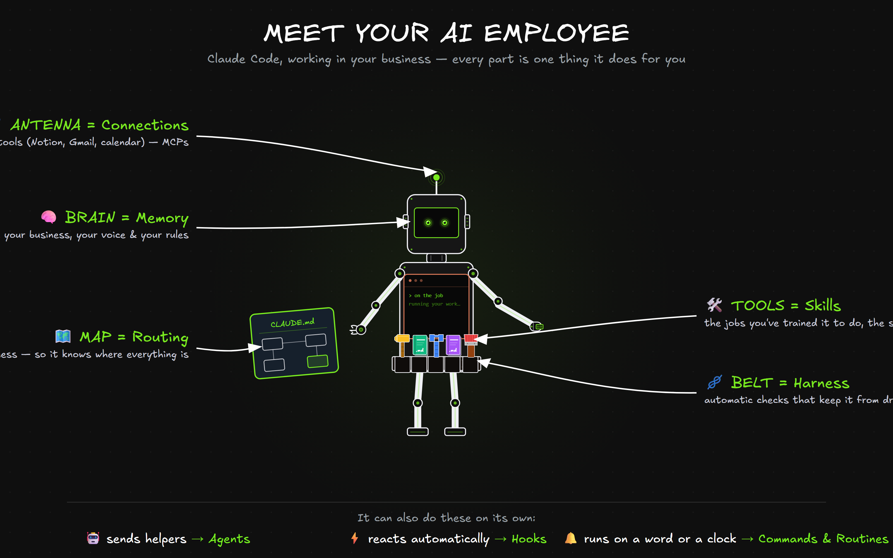

Claude Code isn't a chatbot. It's an AI Employee you build — a worker that does real jobs in your business. This page introduces every part of it, using one picture, so the words you'll hear later (skills, harness, hooks, MCP) already mean something. No code, no terminal — just the concepts and why each one matters. Each part has a “Go deeper” you can open when you're ready for more.
Here's your AI Employee. Every labeled part is one thing Claude Code does for you — the rest of this page is just one short section per part.

A chatbot answers questions. An AI Employee does the work — it has a memory of your business, tools it's trained to use, connections to your other software, and checks that keep it reliable.
Claude Code isn't autocomplete. It works in a loop, like a good new hire: read the situation, do the task, check its own work, adjust — until it's actually done.
And you're never locked out: you can interrupt, steer, or add context mid-task at any time.
It never does anything risky without asking. Before an action, it checks: is this already approved or clearly safe? If yes, it proceeds; if not, it stops and asks you — Deny · Allow once · Always allow. Pick "always" and it remembers, so you're not asked again.
You can also pre-write rules once — e.g. always allow npm test, always deny rm * — and clicking "Always allow" writes that rule for you.
What it is. It remembers your business — your voice, your rules, your facts — in plain text files (CLAUDE.md and MEMORY.md). The brain in the robot's head.
Why you use it. So it never starts from scratch. It works like someone who already knows how your business runs, instead of a stranger you re-brief every time.
remember that my brand voice is calm and plain, never hypey — and it'll hold that from then on.CLAUDE.md is the most important file in your workspace — the first thing it reads every session. The rule of thumb: if something isn't in here, your AI doesn't know it exists. It does three jobs:
Project memory (.claude/CLAUDE.md) → your personal memory (~/.claude/CLAUDE.md) → auto-memory (things it learns over time). You rarely manage these by hand — just say remember that we always use dark mode for demos and it files it for you.
Everything it can "see right now" is its context window. That's why skills are kept short and load their detail only when needed — so the window stays clean and it never runs out of room mid-task.
What it is. The same CLAUDE.md is also a map of your business — where things live and which skill to use for what. The map in the robot's hand.
Why you use it. So it goes straight to the right place instead of guessing. Give your AI a map and it navigates; leave it without one and it wanders.
CLAUDE.md is the traffic controller. One request flows down a chain: CLAUDE.md (which skill?) → SKILL.md (which step?) → the workflow (do the steps) → references (apply your voice / data). If the top of that chain is wrong, the wrong skill loads and the output is wrong.
Scaling across clients: keep one shared skill + a small reference file per client (their data, their branding) — same process, different details.
What it is. A skill is a task you've trained it to do the same way every time — draft a newsletter, write a proposal, prep for a call. Your know-how, captured once.
Why you use it. Reusable and consistent. Instead of re-explaining the job, you say one phrase and it runs your exact process.
create a skill that drafts a proposal from my call notesA skill is a plain text file (SKILL.md) with two lines of setup — a name (becomes /name) and a description (what it reads to know when to use it) — then your instructions. That's it. You just built something most people think needs a developer.
It grows with you: start as one file; add a references/ folder for your voice or data; add workflows/ when one skill needs to handle a few variations.
Watch one skill improve as you add a single file:
"Hi John, thank you for your time today. I wanted to follow up regarding our conversation…" — correct, but generic. It doesn't sound like you.
"John — great talking through the rollout. Next step: I'll send the draft by Thursday." — same /follow-up command, now in your voice, because you added one references/my-voice.md.
Refining is normal. Run it → ask "what's wrong?" → tone off? add a reference; too generic? add an example → re-run. Repeat 3–5 times. You're training an employee, not writing code.
What it is. A harness is an automatic check that runs every time a skill does its job — catching a slip before it ever reaches you. The belt strapping everything in place.
Why you use it. Reliability. A skill can quietly drift or forget its own rule; a harness catches that automatically, so you can trust the output without re-reading it.
harden this skill so it never goes off-brand — it adds a check that runs on every draft.The principle: don't instruct a skill to remember a rule — enforce it with a check, so doing it right is automatic.
What it is. Links to your other tools — Notion, Gmail, your calendar, your CRM. The antenna that reaches the outside world. (The techy name is "MCP.")
Why you use it. So it does the work where your work lives, not just talks about it — reading your tasks, sending your emails, updating your docs.
connect my Notion so you can read and update my tasksThink of each connection as a USB port — plug in a service and your AI gets new abilities for it. Connecting is three steps and you don't touch any config:
Once connected, it can work across tools in one go: take the action items from this call and create them as Notion tasks, then draft the recap email.
What it is. It can spin up helper workers that go do a job on their own — in the background or several at once — then report back.
Why you use it. To delegate big or repetitive work instead of supervising each step. You ask once and get a finished result, not a play-by-play.
create an agent that researches these 10 competitors and reports backThe key idea: each agent gets its own context window — its own desk. All the files it digs through stay on its desk; only the summary comes back to you. That keeps your main conversation clean and fast.
There are ready-made helpers you'll see it use automatically:
Rule of thumb: keep it in the main chat when you want back-and-forth; send it to an agent when the task is self-contained and verbose ("research X and report back").
What it is. Automatic reactions to events — "after every save, run the check," "when a session starts, load my context." Reflexes that fire without being asked.
Why you use it. So the right thing happens on its own and you never have to remember it. The safety net that makes the whole system dependable.
create a hook that checks every draft before it's savedEvery hook is three parts: WHEN (an event, like "before a file is written") → WHAT (which thing it watches) → DO (run a script, ask Claude a yes/no, or spawn a reviewer). They run outside the conversation, so they cost zero of your working memory.
The best move: build a quality inspector right into a skill. Example — a write-email skill with a hook that says: "before finishing, review this email. Does it sound like a real person, not AI? If it's robotic, rewrite it." You only ever see the polished version.
There are 14 events in total (session start/end, before/after a tool runs, on completion, and more) — but you'll mostly meet them through skills, not by wiring them by hand.
What it is. A command is a one-word shortcut (a /slash) that runs a whole routine. A routine runs it on a schedule — nightly, every Monday — with no one starting it.
Why you use it. Stop re-typing the same request, and let recurring work run itself. This is where you finally step out of the loop.
make a command for my daily plan — or run my weekly report every Monday at 9amEvery skill is also a slash command — the folder name becomes the command. The write skill is /write. You can let Claude pick the skill automatically, or call it directly by name.
Whatever you type after the command fills in the blank: /follow-up John about the proposal becomes "write a follow-up for John about the proposal." There are also a few built-ins worth knowing: /clear (fresh start), /compact (free up room), /memory (edit what it remembers), /init (set up CLAUDE.md).
One prompt sets the whole worker in motion — every part you just met plays its role, in order:
The one-liner: Memory = what it knows · Skills = what it does · Hooks & the harness = what happens before and after.
The whole worker at a glance, then the three habits that make it dramatically better.
| Part | What it does | Lives in |
|---|---|---|
| 🧠 Memory | What it knows about your business | CLAUDE.md · MEMORY.md |
| 🗺️ Routing | Which skill to use, where things live | CLAUDE.md |
| 🛠️ Skills | Tasks it does the same way every time | .claude/skills/ |
| 🪢 Harness | Automatic checks that keep it reliable | scripts + reviewers |
| 📡 Connections | Reaches your tools (Notion, Gmail…) | .mcp.json |
| 🤖 Agents | Helpers that work on their own | .claude/agents/ |
| ⚡ Hooks | Automatic reactions to events | .claude/ settings |
| 🔔 Commands | One-word shortcuts & schedules | /your-skill |
The single highest-leverage habit. "Write the report" is vague; "write the report, then re-read it against these 3 rules and fix anything that fails" gives it a target to verify against. It performs dramatically better when it can grade itself.
For anything bigger than a one-liner, let it look around and propose a plan before it acts. (In the editor, Shift+Tab toggles read-only "plan" mode.) You approve the plan, then it executes.
"Fix the login bug" wanders. "Checkout breaks for expired cards — check the payments folder, write a failing test first, then fix it" lands. A minute of specifics saves three rounds of correction.
You've met every part. Now build your first one — the Roadmap walks you through it, one step at a time.
Open the AI Employee Roadmap →{kind=link}